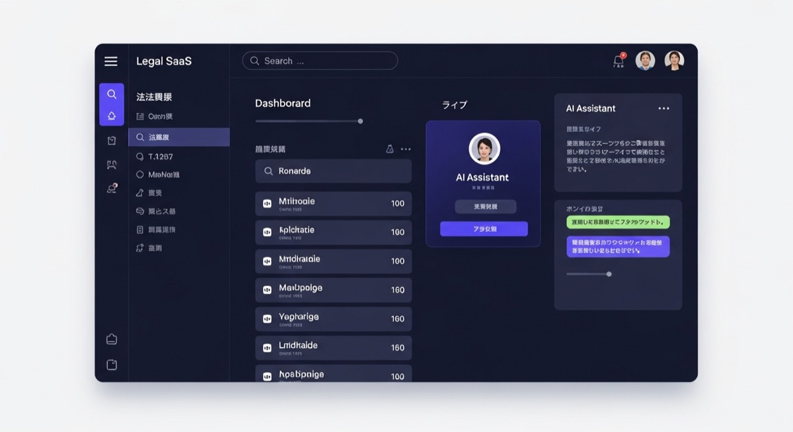
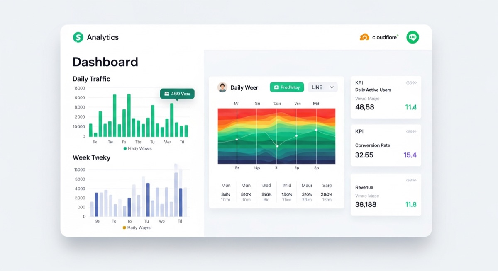

01
LINE Bot
問い合わせ自動化
よくある質問・予約・在庫照会を LINE 上で完結。 既存の業務フローに合わせて作り込みます。 自動応答だけなら下限寄り、予約受付まで含めると上限寄りが目安です。
from
¥30,000 — ¥100,000
今川大悟（いまがわ・だいご）。 お店や会社の「手が回らない」を、LINEの仕組み・ホームページ・業務の自動化で解決します。 自分でも法律の学習サービス Elenco（エレンコ） を毎日運用しているので、 作ったあとに何が起きるかまで分かった上で作ります。
最初に30分ヒアリングして、要件と制約を整理してから見積もりを出します。 小さく作って早めに触ってもらって、必要なところだけ広げる、という進め方です。
よくある質問・予約・在庫照会を LINE 上で完結。 既存の業務フローに合わせて作り込みます。 自動応答だけなら下限寄り、予約受付まで含めると上限寄りが目安です。
「とりあえずキレイ」ではなく、誰に何を伝えるかから組み立てる。 運用しやすい構造で納品します。
スプレッドシート運用の限界を超える時に。 データを集めて、見て、判断できる形に変換します。
アイデアを2〜4週間で動くプロダクトに。 検証に必要な最短経路だけ、本気で作ります。
決済が落ちたり、課金導線でユーザーが離れたり、急に障害が出たり。 そういう本番の現実に毎週向き合っていて、その経験を受注の仕事にもそのまま持ち込んでいます。

法律学習 SaaS / Solo-founded
6法令・3,800条超の条文データと解説記事120本超を収録。 条文検索、AI演習、Stripe課金・解約フローまで一人でフルスタック実装し、 運用・障害対応も毎週続けている。

ダッシュボード / 受託
Cloudflare Workers + LINE API で構築した入退室管理。 6軸の分析ダッシュボードで運用判断に使われている。
自作ボードゲーム EC / Solo-founded
「友人の家に集まる夜を特別にする」がコンセプトの自作ボードゲームEC。 物理商品＋PDF配信、Stripe決済。ブランド設計から実装まで一人で。
「LINE Botが欲しい」と言われても、たいてい本当の困りごとは別のところにあります。 最初に欲しいのは要件書じゃなくて、現場の話です。
最初から作り込まず、雑でも動くものを早めに触ってもらう。 画面を見てから「ここ違うな」が出てくることが多いので、その順番を前提にしています。
納品して終わりじゃなくて、誰かが運用する前提で組みます。 DBの構造とかデータの追い方も、説明できる形で渡すようにしてます。
Elencoの運用で、決済失敗や障害、問い合わせの一次対応を毎週やっています。 「動く」と「運用に乗る」は別物だと、身をもって分かっているのが、たぶん一番の財産です。
※ご発注の際に読む必要はありません。IT担当の方・同業者向けの技術情報です。 「使ったことがある」と「本番で運用している」は分けて書いています。
自社プロダクトの本番運用と受託納品で常用。障害対応まで含めて経験があります。
受託案件での構築・納品実績があります。要件に合わせて選定します。
プロダクト内の機能として組み込み・連携した経験があります。
要件が固まってなくて大丈夫です。
やるかどうかは、話してから決めて構いません。
入力は「お名前・メール・ご相談内容」の3つだけ。30秒で送れます。
送信しました。
通常24時間以内にご連絡します。
業務自動化・ダッシュボードのご依頼は ヒアリングシート からだと話が早いです。
フォームがうまく動かない場合は wishdaigo1458@gmail.com まで。